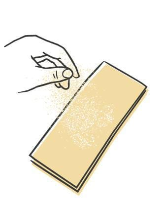
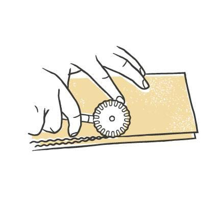
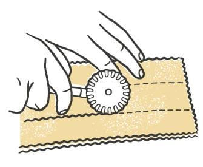
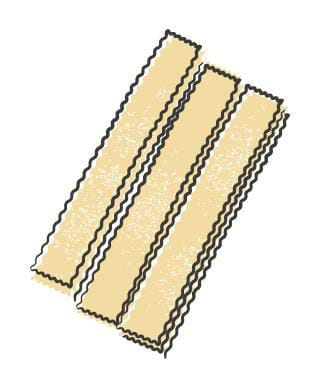

Pasta / Shapes
Pappardelle
- Dough
- Egg Dough
- Region
- Found throughout Italy, densest in Tuscany
- Rest
- 20-30 min at room temperature
- Source
- Pasta, Missy Robbins
- Formed
- ribbon
Shaping




Method
- Make an egg-based dough, then roll and sheet it.
- Give a wooden work surface a light dusting of 00 flour. Line a sheet pan with parchment, then dust the parchment with semolina.
- Knife the sheets into 9-inch lengths and trim the ragged edges off. Save the trim for soup.
- Dust each sheet lightly with 00 flour and stack them neatly two or three high. Run a fluted pastry cutter around every edge of the stack so all four sides come out ruffled.
- Starting at the long edge of the stack, cut 1 1/4-inch strips working inward. A ruler or straightedge keeps the lines honest until the fluted cutter feels familiar.
- Pull the strips apart, dust each one lightly with 00 flour, then restack them 10 to 12 pieces high and set the stacks on the pan.
- Repeat with the rest of the sheets.
- Dry 20 to 30 minutes at room temperature.
- To hold, cover the pan with plastic and refrigerate up to 24 hours.
Notes
- Cut width is 1 1/4 inches, with a fluted pastry cutter. All four edges of the stack get ruffled before the strips are cut.
- Sheets go 9 inches long, stacked two or three high to cut. The finished strips get restacked 10 to 12 high on the pan.
- Robbins makes a second version from her chickpea dough alongside the egg-dough one.
- Refrigerated shelf life is 24 hours.
- Pairs with any ragu that suits, historically game ragu such as rabbit or hare, and also with chickpeas and rosemary.